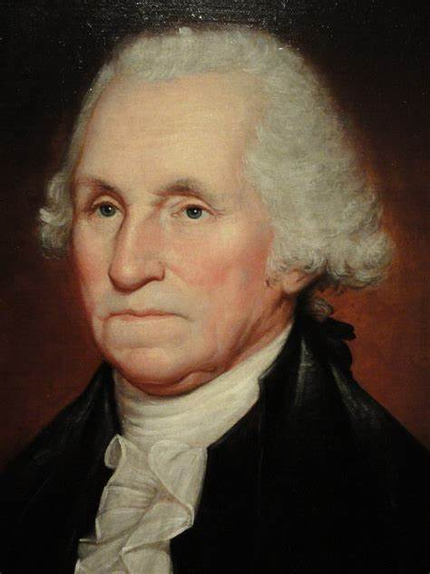

George Washington
George Washington is considered one of history's greatest leaders for his central role in founding the United States. As the first president (1789-1797), he established key precedents, including peaceful transitions of power, the formation of a strong federal government, and a policy of neutrality in foreign affairs. Washington also gained fame as a military leader during the American Revolution, where his strategic brilliance and ability to unite diverse forces were critical to the American victory. His character—marked by integrity and selflessness—guided the nation through its early years, and his decision to step down after two terms set an enduring example of democratic leadership. Washington's legacy as a visionary leader continues to shape both America and the world.